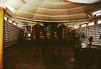
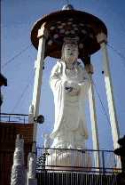
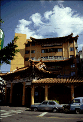
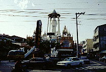
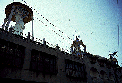

慈明寺/台中
  
宝覚寺と並ぶ台中の名刹、といっても大雄宝殿（本堂の事ね）はマンションと合体しており味気ない雰囲気。その道を挟んだ向かい側に円通宝殿がありその上に21メートルの白衣観音像がタイ風の建築物に囲まれて、おわす。コンクリート製、胎内空間は特になし。
円通宝殿の1階は幼稚園。前には園バスが停まっており子供の嬌声が渦巻くその雰囲気とタイ風のあずまやがあまりにも不釣り合いで面白かった。上を見上げなければ只の幼稚園、というやけに所帯じみた観音さまだった。
ちなみにそのとなりにYMBAを発見。YMCAの仏教版のこと。
 
次のスポットへGO!
台湾大仏列伝のページへ
珍寺大道場 HOME